🏆 Filmes Premiados 🏆
Dentre diversas grandes produções, alguns filmes se destacaram em muitas categorias.
O Oscar 2022 foi realizado no dia 27 de março com adaptações em meio à pandemia.
Em mais de 90 edições da maior premiação da indústria cinematográfica, alguns filmes se destacaram como
recordistas de indicações e estatuetas do Oscar. Além de terem a honra do maior reconhecimento do cinema,
essas
produções conseguiram ser exaltadas em pelos menos oito categorias cada uma após trabalhos impecáveis nas
telonas.
Com menos de um mês para a realização do Oscar 2022, marcado para o próximo dia 27 de março, vamos esquentar
o clima para conhecer os vencedores deste ano e relembrar os filmes mais premiados da história da premiação.
Confira os maiores
vencedores do Oscar:
Titanic (1997)
A trama inspirada no naufrágio real da embarcação RMS Titanic, ocorrido em 1912, garantiu 14
indicações ao Oscar e levou 11 estatuetas como recordista da premiação. "Titanic" venceu os prêmios de:
Melhor Filme, Melhor Direção, Melhor Fotografia, Melhor Direção de Arte, Melhor Figurino, Melhor
Trilha-sonora, Melhor Edição, Melhor Efeitos Sonoros, Melhores Efeitos Visuais, Melhor Música Original e
Melhor Som.
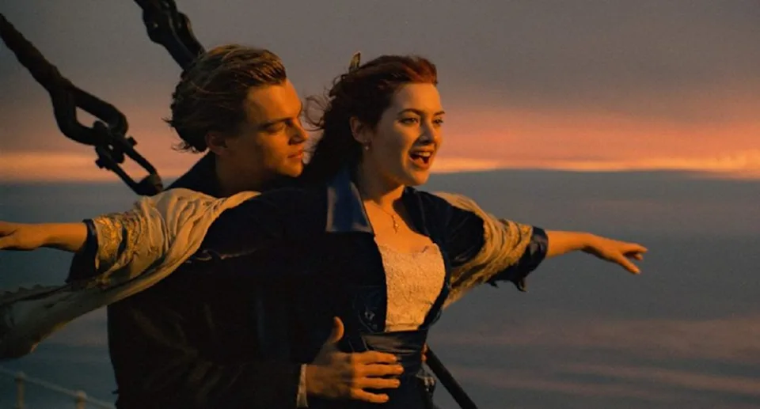
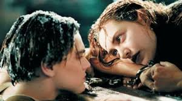
BEN-HUR (1959)
Dirigido por William Wyler, o filme conta a história de um mercador judeu com o nome do título da produção e
é condenado a viver como escravo por um velho amigo. Com 12 indicações ao Oscar, o longa é outro recordista
com 11 estatuetas ao vencer os prêmios de: Melhor Filme, Melhor Direção, Melhor Fotografia, Melhor Direção
de Arte, Melhor Figurino, Melhor Mixagem Som, Melhor Edição, Melhores Efeitos Especiais, Melhor
Trilha-sonora, Melhor Ator (Charlton Heston) e Melhor Ator Coadjuvante (Hugh Griffith).
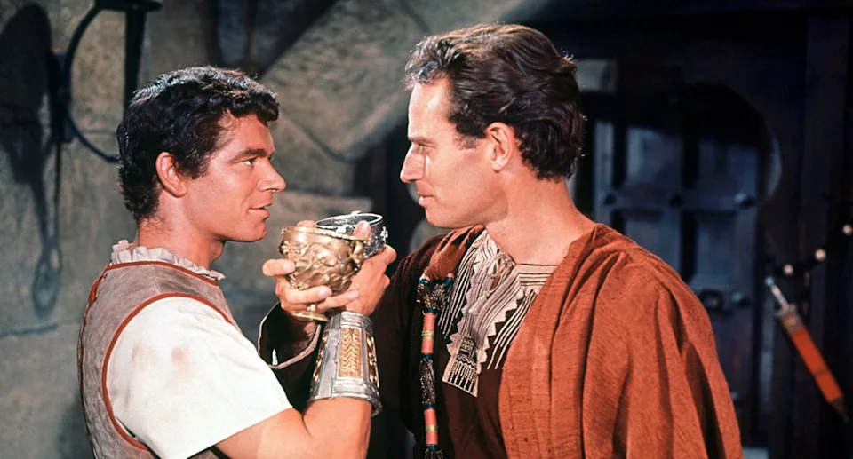
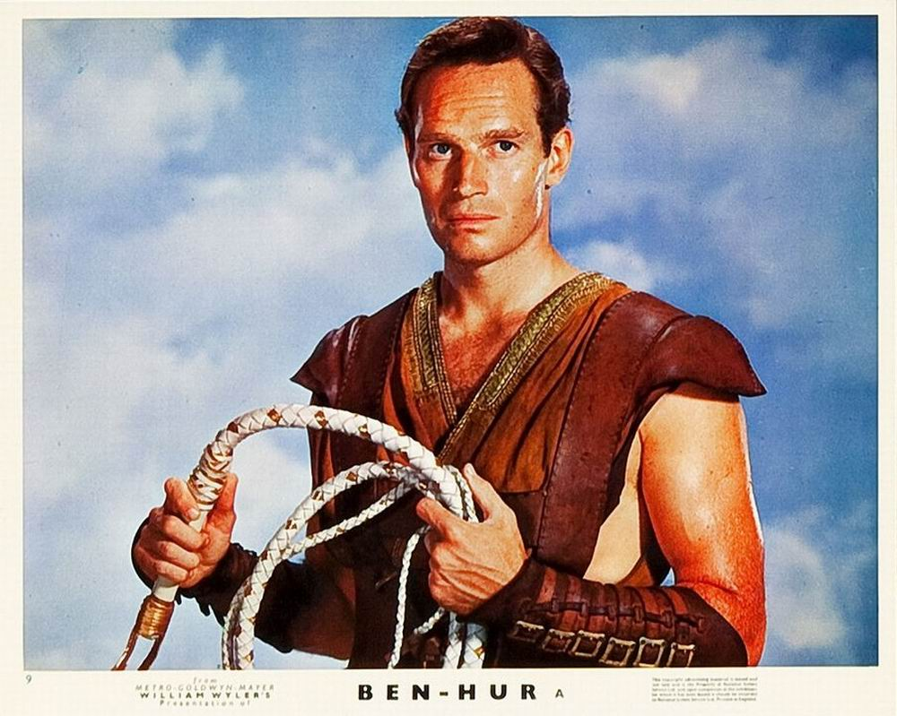
SENHOR DOS ANÉIS: O RETORNO DO REI (2003)
Baseado nos livros da série escrita por J.R.R. Tolkien, o longa é o último da trilogia adaptada para o
cinema. O detalhe é que o filme venceu o Oscar nas 11 categorias as quais foi indicado: Melhor Filme, Melhor
Direção, Melhor Roteiro Adaptado, Melhores Efeitos Visuais, Melhor Direção de Arte, Melhor Edição, Melhor
Figurino, Melhor Maquiagem, Melhor Mixagem de Som, Melhor Trilha Sonora, Melhor Canção Original
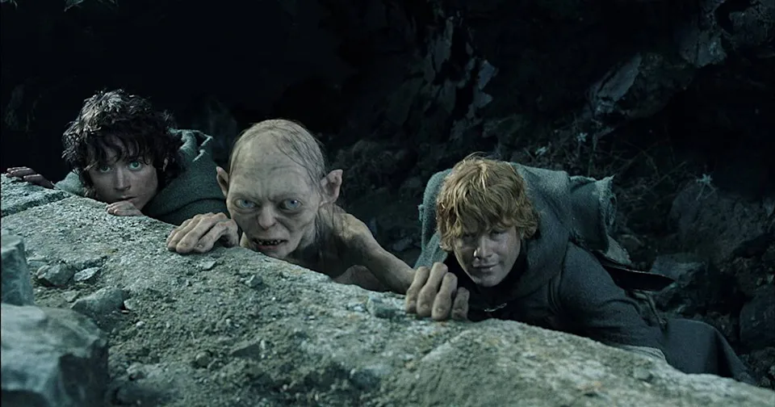
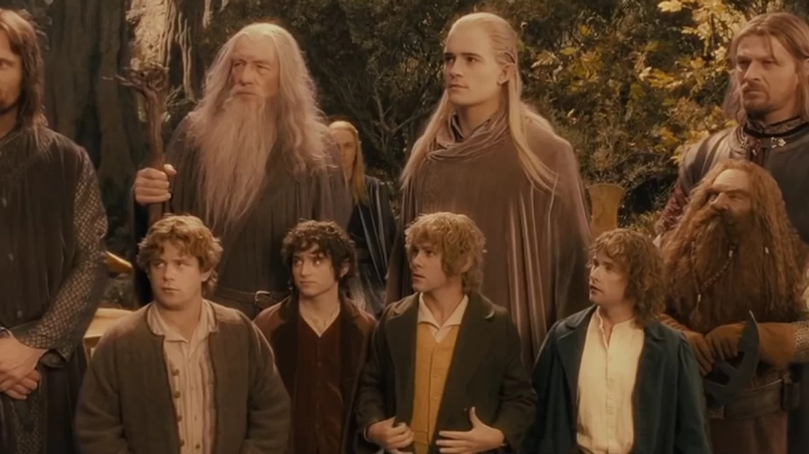
AMOR, SUBLIME AMOR (1961)
O longa da década de 1960 é baseado em um musical homônimo da Broadway, de 1957, ao contar a história de
amor proibido entre membros de duas gangues rivais na periferia de Nova York. Indicado em 11 categorias, a
produção venceu 10 prêmios como: Melhor Ator Coadjuvante (George Chakiris), Melhor Atriz Coadjuvante (Rita
Moreno), Melhor Filme, Melhor Direção, Melhor Fotografia, Melhor Direção de Arte, Melhor Som, Melhor Edição
e Melhor Música.
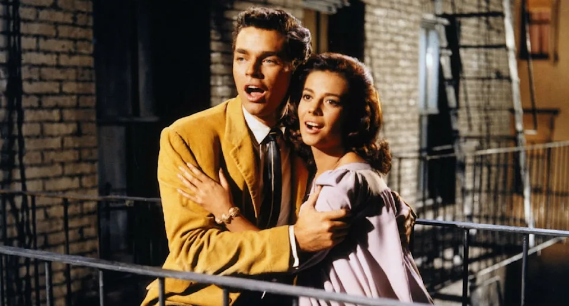
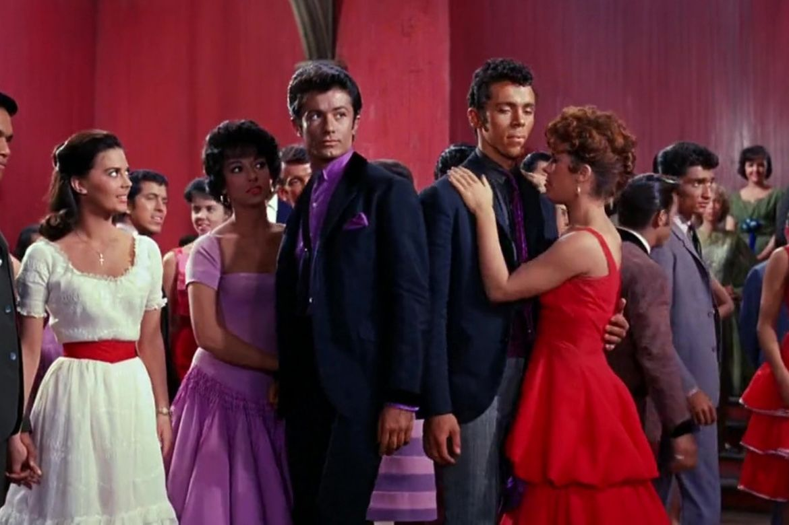
O PACIENTE INGLÊS (1996)
Ambientado na Segunda Guerra Mundial, a trama retrata a história de um combatente que tem o avião abatido
e passa a receber os cuidados de uma enfermeira canadense. Com 12 nomeações, o longa foi vencedor de nove
prêmios nas categorias: Melhor Filme, Melhor Direção, Melhor Fotografia, Melhor Direção de Arte, Melhor
Figurino, Melhor Mixagem de Som, Melhor Edição, Melhor Atriz Coadjuvante (Juliette Binoche) e Melhor Musica.
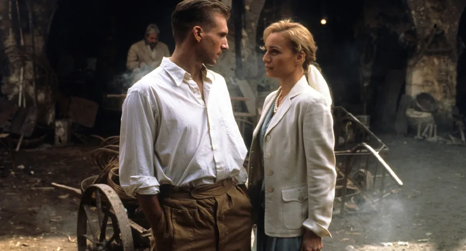
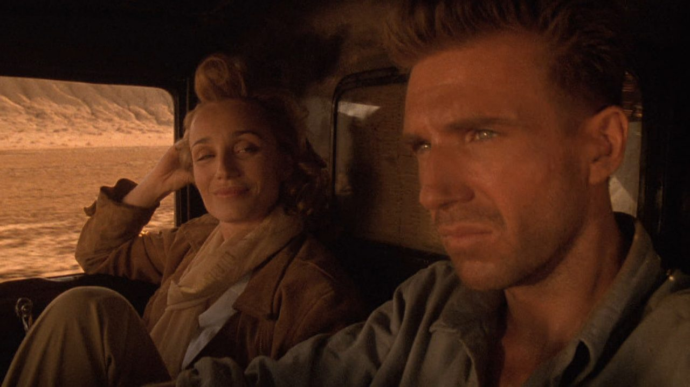
GIGI (1958)
Focado em Gaston, o milionário mais cobiçado de Paris, o filme aborda a aproximação dele com a jovem Gigi,
uma garota que está sendo treinada por sua tia para aprender a se portar entre a alta sociedade. Assim como
o terceiro "Senhor dos Anéis", a produção venceu em todas as categorias as quais foi indicado. Neste caso,
foram nove prêmios como: Melhor Filme, Melhor Direção, Melhor Roteiro Adaptado, Melhor Fotografia, Melhor
Direção de Arte, Melhor Figurino, Melhor Edição, Melhor Música Original, Melhor Mixagem de Som.
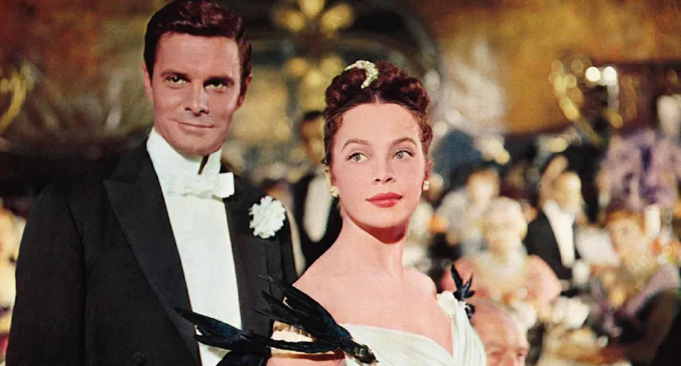
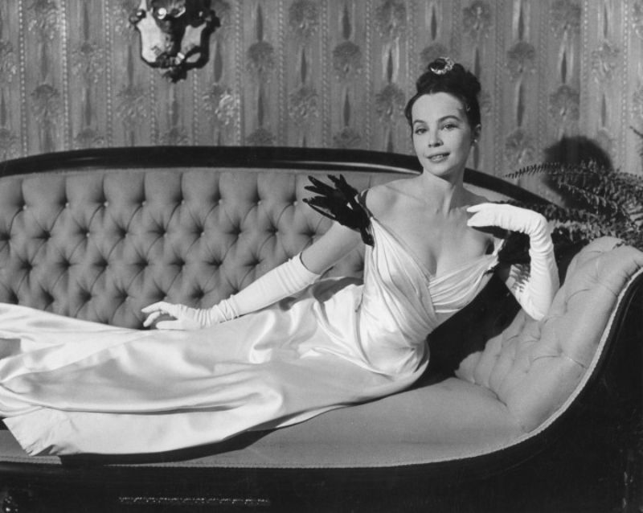
O ÚLTIMO IMPERADOR (1987)
O longa que retrata a história de Pu Yi, o último imperador da China, é dirigido por Bernardo Bertolucci e é
ambientado a partir do momento que o chinês assumiu a posição de líder com apenas três anos de idade. O
filme foi mais uma produção vencedora em todas as a que foi indicado. São nove prêmios como: Melhor Filme,
Melhor Direção, Melhor Roteiro Adaptado, Melhor Fotografia, Melhor Direção de Arte, Melhor Figurino, Melhor
Mixagem de Som, Melhor Edição, Melhor Música Original.
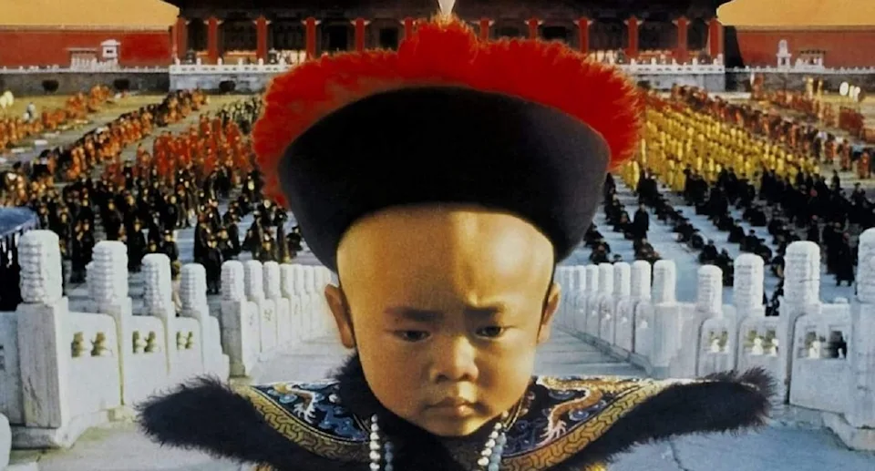
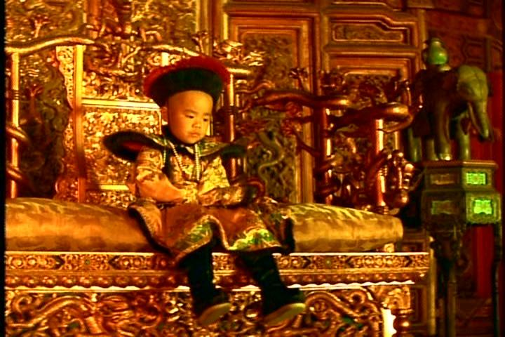
MINHA BELA DAMA (1964)
Dirigido por George Cukor, a trama é centrada em Henry, um professor de fonética que aposta transformar uma
simples florista em uma dama. O filme levou oito estatuetas nas categorias: Melhor Ator (Rex Harrison),
Melhor Filme, Melhor Direção, Melhor Fotografia, Melhor Direção de Arte, Melhor Figurino, Melhor Mixagem de
Som e Melhor Música.
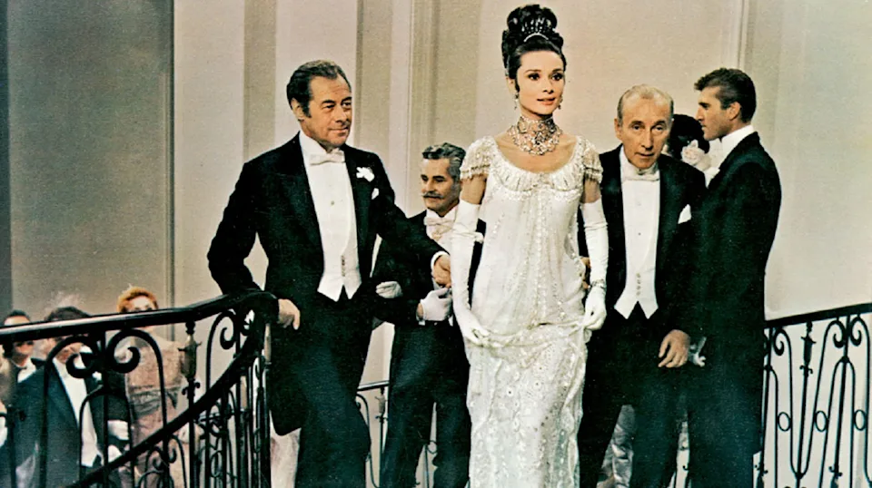
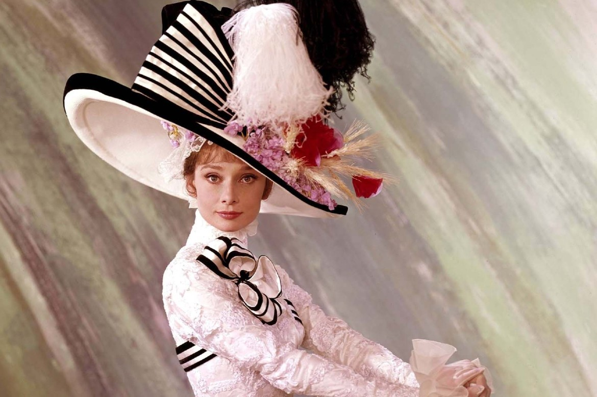
GANDHI (1982)
A cinebiografia do líder indiano Gandhi retrata a fase em que ele enfrentou o domínio britânico sobre seu
país ao utilizar a resistência não violenta, o que ajudou a Índia a conquistar a independência. O filme
biográfico garantiu oito prêmios do Oscar nas categorias: Melhor Ator (Ben Kingsley), Melhor Filme, Melhor
Direção, Melhor Fotografia, Melhor Roteiro, Melhor Direção de Arte, Melhor Figurino e Melhor Edição.
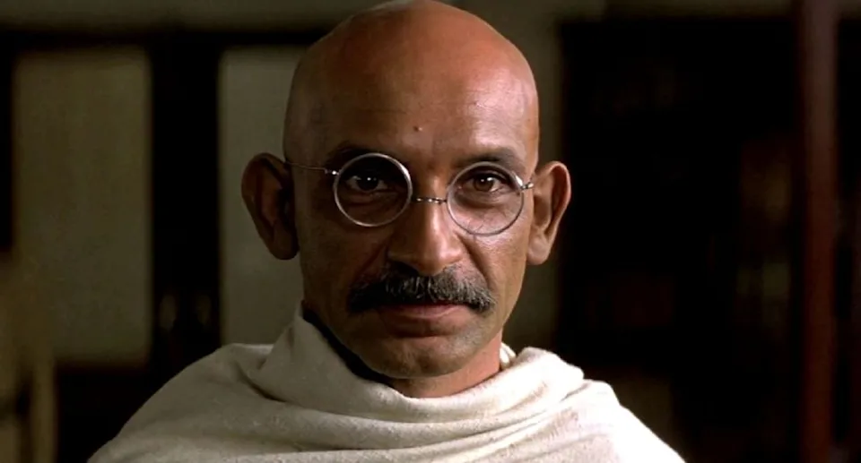
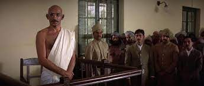
QUEM QUER SER UM MILIONÁRIO (2008)
A produção retrata a história surpreendente de Jamal Malik, um jovem de 18 anos que participa de uma versão
indiana do programa de TV “Quem quer ser um milionário?” e acaba usando de suas superações de vida como base
para responder às perguntas. Gravado em Mumbai com atores locais, o filme venceu oito prêmios do Oscar nas
categorias: Melhor Filme, Melhor Direção, Melhor Roteiro Adaptado, Melhor Fotografia, Melhor Mixagem de Som,
Melhor Edição, Melhor Trilha sonora Original (Jai Ho) e Melhor Canção original.
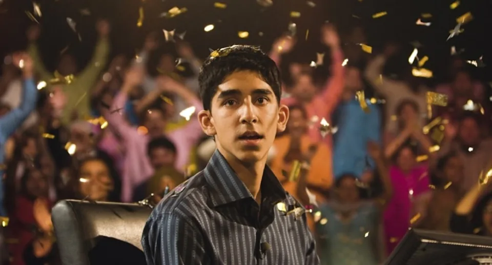